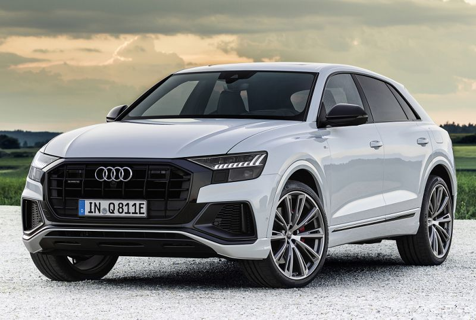
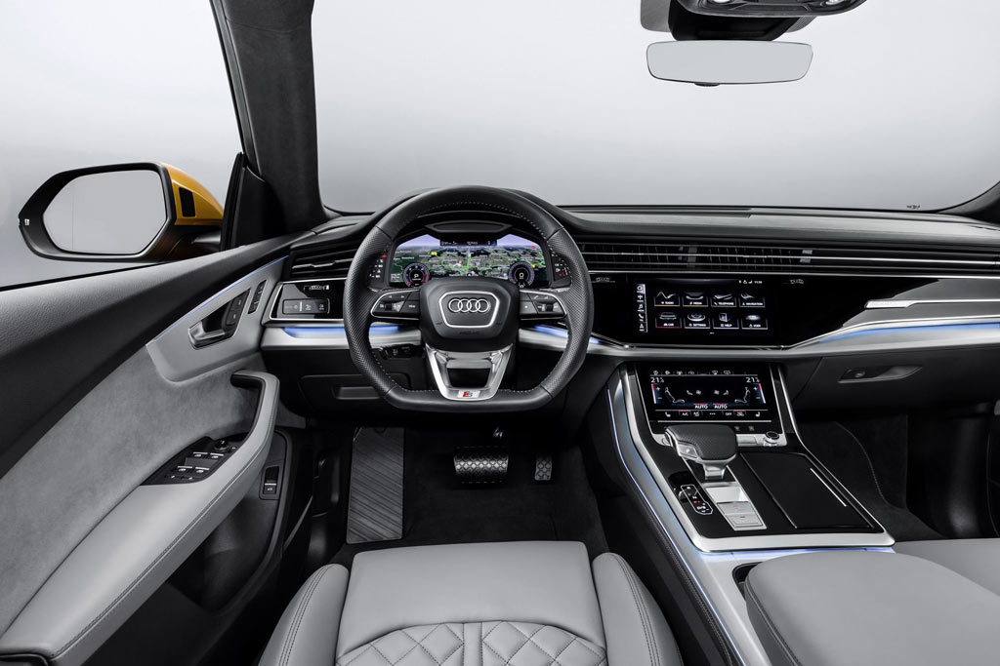
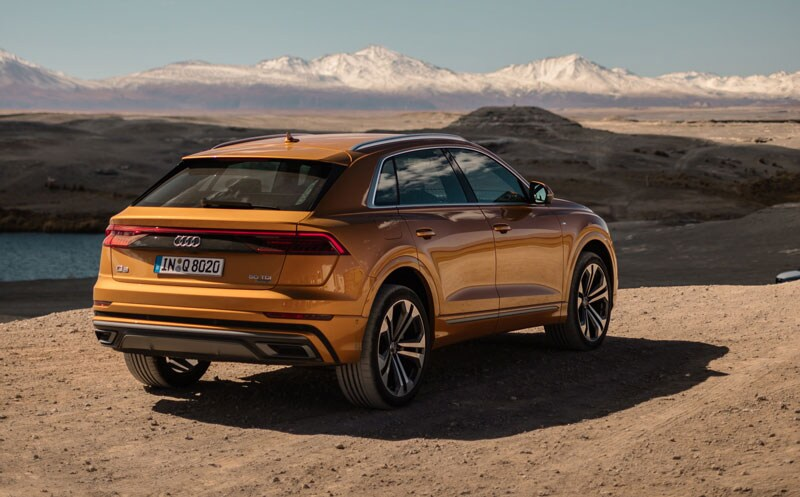
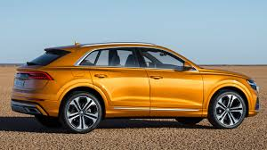
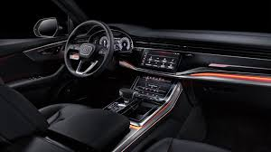
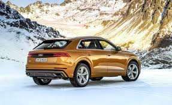

В начале июня восемнадцатого года на специальном мероприятии «Brand Summit» в китайском Шэнчжене состоялась презентация новой модели Audi Q8 2021, слухи о появлении которого ходили более четыре лет. За это время производитель привозил на выставки и автосалоны многочисленные концепты, предвещающие выход серийной машины.
В итоге новинка оказалась практически точной копией представленного ранее прототипа Sport Concept, поэтому внешность купеобразного кроссовера откровением не стала. В фирме заявляют, что при создании облика дизайнеры черпали вдохновение в раллийном Audi Quattro из начала восьмидесятых.
Было известно заранее, что в компании решили не копировать конкурентов в лице BMW X6 и Mercedes GLE Coupe, выбрав несколько иной путь. В итоге Ауди Ку 8 2021 (фото и цена) получил совершенно оригинальный кузов, отличный от исходного Q7 II, с заваленными задними стойками, слегка ниспадающей крышей и укороченным задним свесом. Спереди автомобиль выделяется огромной решеткой радиатора с шестью хромированными вертикальными ребрами и широкой окантовкой, примыкающей к фарам. Уже в базе здесь установлена узкая светодиодная головная оптика, визуально расширенная за счет черных накладок снизу. Брутальности добавляют крупные боковые воздухозаборники в переднем бампере и защитная накладка по низу.
По умолчанию спортивный вседорожник поставлен на 19-дюймовые диски, но за доплату предлагаются колеса диаметром на 21 и 22″. Передние и задние крылья модели имеют визуально подчеркнутое расширение, накладки на дверях и арках могут быть выполнены из черного пластика, либо окрашены под цвет кузова с серебристым молдингом, окна — без рамок. Сзади машина узнается темной полосой на всю ширину кормы, на которой разместились диодные фонари с необычным рисунком огней и тоненькой полоской по верху. На кромке крыши разместился спойлер, который имеет несколько вариантов дизайна, а бампер украшен защитной вставкой по центру с имитацией диффузора и фальшивыми ромбовидными патрубками.
Салон нового Audi Q8 2021 года оказался выполнен в стиле флагманского седана «а-восемь», что заметно добавляет ему очков на фоне своего собрата, на базе которого он построен. Здесь виртуальный щиток приборов на дисплее диагональю 12,3 дюйма, а также два экрана на центральной консоли: за мультимедийку отвечает 10,1-дюймовый тачскрин, а настройки климата возложены на монитор 8,6″. Нарисованные кнопочки оснащены функцией тактильного отклика в виде небольшой вибрации на экране, правда, на других моделях это решение работает не идеально, а сами дисплеи требуют тщательного ухода, поскольку моментально становятся затыканы отпечатками пальцев. Мультимедийная система MMI navigation plus поддерживает голосовые команды, а на рынках некоторых стран имеет выход в Интернет и умеет раздавать Wi-Fi.
Машине отрядили спортивный руль с усеченным в нижней части ободом, а задний диван готов принять трех человек, хотя центральному явно будет не столь комфортно. Зато в компании заявляют, что Кью 8 может предложить больше пространства над головами пассажиров второго ряда, по сравнению с конкурентами.
Кроссовер Audi Q8 2021 построен на модульной платформе MLB Evo с двухрычажной подвеской спереди и многорычажкой сзади. По умолчанию она идет пружинная, зато с электронноуправляемыми амортизаторами, но за доплату доступна адаптивная пневма, позволяющая не только регулировать жесткость, но и увеличить дорожный просвет (клиренс) на дополнительные 90 мм — до максимальных 254 миллиметров. В базовое оснащение входят также рулевое управление с прогрессивной характеристикой и фирменная система полного привода quattro с механическим межосевым дифференциалом, по умолчанию распределяющим тягу между осями в соотношении 40:60. В качестве опции можно заказать полноуправляемое шасси с углом отклонения задних колес до пяти градусов.
Габаритная длина новой модели Ауди Q8 составляет 4 986 миллиметров — это на 66 мм короче Ку-седьмого. При этом ширина выросла до 1 995 (+ 27), высота снизилась до 1 705 (- 36), а размер колесной базы равен 2 897 (- 7). Объем багажника заявлен на уровне 605 литров, но при сложенных спинках заднего дивана размер отсека возрастает до 1 755 л. По началу для авто предложат три двигателя — под капотом бензиновой версии Q8 55 TFSI разместится 3,0-литровый V6 мощностью 340 л.с., тогда как вариант 50 TDI в движение приводит шестицилиндровый турбодизель объемом три литра и выдающий 286 сил. Аналогичный движок, но дефорсированный до 231 л.с. получил индекс 45 TDI.
Все движки дополнены вспомогательным стартер-генератором с ременным приводом, работающим от 48-вольтной сети, которую питает литий-ионная батарея. Эта система позволяет рекуперировать кинетическую энергию от торможения для подзарядки аккумулятора и питать электрические системы при движении накатом. Функция «старт/стоп» активна на скоростях до 22 км/ч. Ожидается, что позже линейка доступных силовых агрегатов будет расширена, в том числе за счет появления модификации SQ8, которая, вероятно, получит ту же «начинку», что и Ауди SQ7. Последний оснащен 435-сильным (900 Нм) дизелем 4.0 TDI с электрическим наддувом. Не исключены также полноценный гибрид и даже «заряженный» RS Q8 на шестьсот с лишним «лошадей».
А еще Ауди Q8 в новом кузове «до зубов» вооружили электронными ассистентами, чтобы в перспективе установить автопилот. Для этого здесь есть пять радаров, шесть камер, двенадцать ультразвуковых сенсоров и лазерный сканер. Пока что авто умеет дистанционно заезжать в гараж и выезжать из него, избегать наезда на бордюры, держаться в выбранной полосе, соблюдать дистанцию и даже автоматически останавливаться, если водитель не реагирует на сигналы электроники.
Старт продаж Audi Q8 в России пришелся на четвертый квартал две тысячи восемнадцатого, цена модели в исполнении с 3,0-литровым движком 55 TFSI на 340 «лошадей» и полным приводом начинается от 5 520 000 рублей, что примерно на полмиллиона дороже Q7 в схожем оснащении. Первые машины появились у дилеров в начале декабря, а в мае девятнадцатого до нас добралась дизельная модификация 45 TDI (от 5 375 000 р). В стандартное оснащение включены шесть подушек безопасности, диодная головная оптика, двухзонный климат-контроль, адаптивная пружинная подвеска, комбинированная отделка кресел, сервопривод крышки багажника, а также 20-дюймовые колеса. За доплату можно заказать матричные фары HD Matrix LED (24 светодиода в каждом блоке), премиальную аудиосистему Bang & Olufsen, четырехзонный климат, амбиентную подвеску салона, вентиляцию и массаж передних сидений, проекцию на лобовое стекло и еще много чего.
